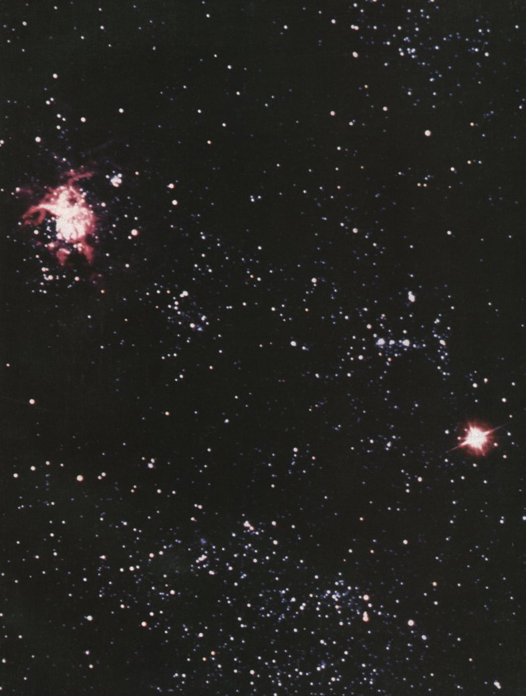

Fifteen to twenty billion years ago the universe arose with a cataclysmic explosion that hurled hot, energy-rich subatomic particles into all space. Within seconds, the simplest elements (hydrogen and helium) were formed. As the universe expanded and cooled, galaxies condensed under the influence of gravity. Within these galaxies, enormous stars formed and later exploded as supernovae, releasing the energy needed to fuse simpler atomic nuclei into the more complex elements. Thus were produced, over billions of years, the chemical elements found on earth today. Biochemistry asks how the thousands of different biomolecules formed from these elements interact with each other to confer the remarkable properties of living organisms.
In Part I we will summarize the biological and chemical background to biochemistry. Living organisms operate within the same physical laws that apply to all natural processes, and we begin by discussing those laws and several axioms that flow from them (Chapter 1). These axioms make up the molecular logic of life. They define the means by which cells transform energy to accomplish work, catalyze the chemical transformations that typify them, assemble molecules of great complexity from simpler subunits, form supramolecular complexes that are the machinery of life, and store and pass on the instructions for the assembly of all future generations of organisms from simple, nonliving precursors.
Cells, the units of all living organisms, share certain features; but the cells of different organisms, and the various cell types within a single organism, are remarkably diverse in structure and function. Chapter 2 is a brief description of the common features and the diverse specializations of cells, and of the evolutionary processes that lead to such diversity.
Nearly all of the organic compounds from which living organisms are constructed are products of biological activity. These biomolecules were selected during the course of biological evolution for their fitness in performing specific biochemical and cellular functions. The biomolecules can be characterized and understood in the same terms that apply to the molecules of inanimate matter: the types of bonds between atoms, the factors that contribute to bond formation and bond strength, the three-dimensional structure of molecules, and chemical reactivities. Three-dimensional structure is especially important in biochemistry; the specificity of biological interactions, such as those between enzyme and substrate, antibody and antigen, hormone and receptor, is achieved by close steric complementarity between molecules. Prominent among the forces that stabilize three-dimensional structure are noncovalent interactions, individually weak but with significant cumulative effects on the structure of biological macromolecules. Chapter 3 provides the chemical basis for later discussions of the structure, catalysis, and metabolic interconversions of individual classes of biomolecules.
Water is the medium in which the first cells arose, and the solvent in which most biochemical transformations occur. The properties of water have shaped the course of evolution and exert a decisive influence on the structure of biomolecules in aqueous solution. Many of the weak interactions within and between biomolecules are strongly af fected by the solvent properties of water. Even water-insoluble components of cells, such as membrane lipids, interact with each other in ways dictated by the polar properties pf water. In Chapter 4 we consider the properties of water, the weak noncovalent interactions that occur in aqueous solutions of biomolecules, and the ionization of water and of solutes in aqueous solution.
These initial chapters are intended to provide a chemical backdrop for the later discussions of biochemical structures and reactions, so that whatever your background in chemistry or biology, you can immediately begin to follow, and to enjoy, the action.

Facing page : Supernova SN 1987a ( the bright "star" at the lower right ) resulted from the explosion of a blue supergiant star in the Large Magellanic Cloud , a galaxy near the Milky Way . Energy released by nuclear explosions in such supernovae forming the more complex elements of which the earth , its atmoshpere , and all living things are composed .